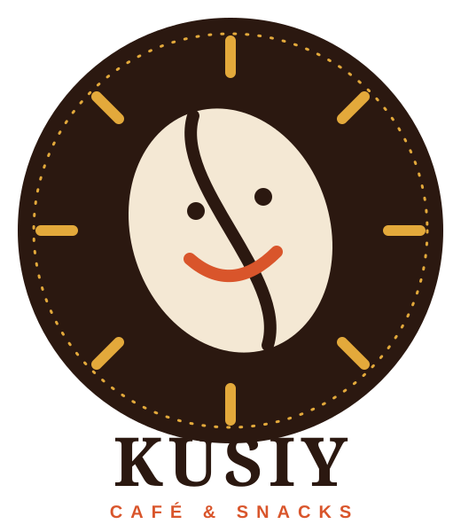

El café diario no puede costar una fortuna
Entre S/ 22 de una franquicia y un café aguado de máquina, no había punto medio. Nosotros: grano de Villa Rica y combos desde S/ 14.50.

KusiyCafé peruano de especialidad · Jesús María, Lima
«Kusiy» significa alegría en quechua. Granos de Villa Rica de 85+ puntos, snacks sin octógonos y un rincón con enchufes en cada mesa. Tu pedido en menos de 3 minutos.
Pide sin hacer cola
Desliza los cafés o abre la carta y toca «Agregar».
Se abre WhatsApp con tu pedido ya escrito. Solo lo mandas.
Lo retiras en la barra en menos de 3 minutos. Pagas en el local con Yape, Plin o tarjeta.
Atendemos en el local (Av. Garibaldi, cdra. 5, Jesús María) y para llevar al paso. Por ahora no hacemos delivery.
Nuestros cafés
Desliza con el dedo (o usa las flechas) para ver el siguiente café. Cada uno gira para que lo veas por todos lados.
Por qué existimos
Lo escuchamos en la calle: encuestamos a 50 estudiantes y profesionales del eje Garibaldi–Salaverry. Esto fue lo que más se repitió.
Entre S/ 22 de una franquicia y un café aguado de máquina, no había punto medio. Nosotros: grano de Villa Rica y combos desde S/ 14.50.
Pre-pedido por QR listo en menos de 3 minutos, enchufes dobles + USB-C en cada mesa y fibra de 1 Gbps.
Masa madre, wraps proteicos y postres endulzados de forma natural. Cero octógonos en la vitrina.
Fuente: encuesta presencial propia, n = 50 (32 estudiantes UP/UPC y 18 profesionales). Plan de Negocios Kusiy, nov. 2026.
Nuestro cliente ideal
Estudiante de 8.° ciclo de Ingeniería Empresarial en la UP y practicante en San Isidro. Entre las 2:45 y las 4:00 p.m. necesita un refugio productivo. Arrástrala para girarla y toca los puntos.
Trabaja de 8:30 a 2:30 p.m. y tiene clases de 4:00 a 8:30 p.m. Esa pausa de 75 minutos es nuestra oportunidad.
Tu navegador no soporta 3D (WebGL). Valeria: 22 años, estudiante UP, adora el Iced Vanilla Latte con leche de avena.
Estándares de servicio de Kusiy según el Plan de Negocios. Las cifras de ventas 2027 son metas, no resultados.
Fidelidad digital
Cada compra suma un sello digital en tu celular (QR, sin tarjetas de cartón). Convenios con carné o fotocheck: 15% de descuento.
Toca un sello
Para oficinas, clínicas y universidades
Café peruano y snacks sin octógonos para reuniones y turnos. Cuéntanos cuántas personas son y para qué fecha, y te enviamos una cotización. También tenemos convenio con carné o fotocheck (15% de descuento).
Los 4 fundadores
Gerente General y de Operaciones
Lidera la cancha: que cada café salga en menos de 3 minutos y el equipo trabaje feliz.
Gerente de Finanzas
Cuida el capital de S/ 48,000, el costo por receta y los presupuestos sinceros.
Gerente de Logística y Suministro
Elige las fincas de Villa Rica, cuida la cadena de frío y evita mermas.
Gerente de Marketing y Comercial
Investiga al cliente en la calle y cierra alianzas con universidades y clínicas.